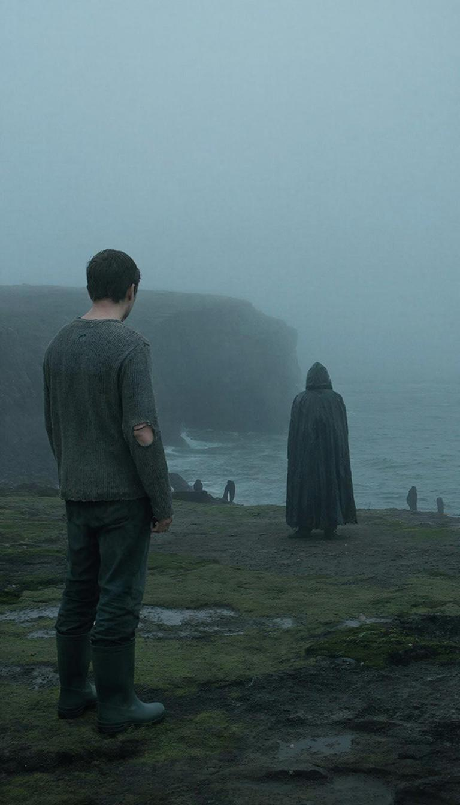

Он купил этот дом на краю посёлка за бесценок. Деньги перевёл по карте, даже не глядя — просто увидел фото в интернете: старая рыбацкая изба, серое дерево, море на заднем плане и полное отсутствие людей. «Идеально», — подумал он и нажал «оплатить».
Тогда, в городе, это казалось правильным решением. Уволиться с работы, которую ненавидел. Уйти от бывшей жены, которая всё равно уже жила с другим. Собрать рюкзак и уехать туда, где его никто не знает и не ждёт. Начать сначала. Или просто закончить — он ещё не решил.
Посёлок назывался Бухта Семи Камней. Название красивое, но камней этих никто не считал, да и бухта была так себе — мелкая, неуютная, с холодной водой даже в июле. Жителей — человек сорок, всё больше старики, которые доживали свой век в домах с печным отоплением и видами на одно и то же море.
Он поселился в крайнем доме, у самого обрыва. Соседей не было — ближайшая изба стояла в полукилометре, и там, кажется, никто не жил. Его это устраивало.
Первые две недели он просто приходил в себя. Спал до обеда, пил чай на веранде, смотрел на воду. Море менялось каждый час — от свинцового до бирюзового, от гладкого до штормового. Он смотрел на это и чувствовал, как внутри понемногу отпускает то, что держало его последние годы: злость, обида, чувство, что жизнь прошла мимо.
Иногда он думал о прошлом. О том, как десять лет назад верил, что станет кем-то важным. О том, как пять лет назад женился на женщине, которую, кажется, никогда не любил по-настоящему. О том, как год назад проснулся и понял, что ему сорок два, а впереди — только бесконечные вторники.
Здесь вторники были такими же, как воскресенья. И это было хорошо.
На третьей неделе он впервые пошёл к морю ночью. Не спалось — днём выпил много кофе, сердце колотилось, мысли лезли в голову ненужные. Решил пройтись, подышать.
Тумана тогда не было. Море лежало чёрное, тяжёлое, луна серебрила только самую кромку волн. Он стоял на обрыве, слушал шум и вдруг понял, что здесь, в этом звуке, есть что-то, чего он не слышал никогда раньше. Не просто вода, а голос. Без слов, но явственный.
Но с той ночи море звучало иначе. Он не мог объяснить, как именно, но это чувствовалось: великан, который дышал под окном, теперь знал, что его слушают.
А потом пришёл туман. Он проснулся оттого, что перестал слышать море.
Три года он засыпал и просыпался под этот звук — ровный, бесконечный, как дыхание спящего великана. Штормило — великан ворочался. Было тихо — великан затаился. Но звук был всегда. Сейчас — нет.
Он сел на кровати, прислушался. В комнате было серо от раннего утра, пахло старым деревом и йодом — йодом пахло всегда, хоть никто уже не помнил, откуда. За окном висел туман такой плотный, что казалось, до стены сарая не три метра, а бесконечность.
Он натянул свитер (драный на локте, зато свой, родной), сунул ноги в резиновые сапоги и вышел.
Туман был тёплый и липкий, как парное молоко. Он залеплял глаза, заползал в рот, делал мир маленьким и зыбким. Пять шагов — и веранда исчезла. Десять — и тропинка к морю превратилась в предположение.
Он шёл на ощупь, по памяти. Сосна справа — значит, скоро поворот. Камень, о который он споткнулся в первый день здесь — обходить слева. Запах гниющей водоросли — море близко. Но вместо водорослей пахло железом. Холодным, ржавым, старым.
Он остановился. В тумане, метрах в трёх, стоял человек. Он это понял не столько глазами, сколько кожей — там, где кончалась серая муть, начиналось что-то плотное, тёмное, молчаливое.
Человек не ответил.
Молчание.
Он сделал шаг вперёд. Туман расступился неохотно, как будто не хотел показывать. Человек был в длинном плаще, мокром, тяжёлом. Стоял спиной. Спина была неестественно прямая, как у тех, кто привык ждать команды «вольно» только после отбоя.
Человек в плаще медленно, очень медленно, начал поворачиваться. Сначала он увидел плечо — мокрое, блестящее. Потом край воротника — с какой-то эмблемой, стёртой до неразличимости. Потом... Потом он зажмурился и открыл глаза уже у себя в комнате.
Он лежал на кровати. Свитер был на месте, сапоги — на ногах, мокрые, в песке. За окном шумело море — обычно, ровно, как дышало всегда.
Но пахло железом.
Три дня он не подходил к морю. Работал во дворе — чинил забор, который чинить было не обязательно, перебирал старые сети, которые никто уже не планировал ставить. В посёлок не ходил — не хотелось ни видеть людей, ни объяснять, почему у него глаза как у больного.
На четвёртый день туман вернулся. Он лежал в кровати и слушал, как мир за окном становится ватным. Сначала исчез звук моря (великан затаил дыхание). Потом перестал доноситься лай собаки с того берега бухты. Потом даже ветер, который всегда шуршал старой черепицей, затих.
Он знал, что надо встать и не идти. Что надо закрыть дверь на засов, задвинуть шторы, включить свет и делать вид, что ничего нет. Но тело поднялось само.
Туман был гуще, чем в прошлый раз. Он почти не давал дышать — воздух превратился в кисель, который приходилось проталкивать в лёгкие усилием воли. Тропинку он нашёл не глазами — ногами. Сами нашли, по памяти.
Человек в плаще стоял на том же месте. Но теперь он смотрел прямо на него. Лица не было. Совсем. Там, где должно быть лицо, — серая гладь, как у тумана, но плотнее, страшнее. И в этой глади угадывалось что-то — не черты, а намерение.
Тишина.
Молчание.
И тут существо в плаще сделало шаг к нему. Он отступил. Ещё шаг. Он отступил ещё — и понял, что дальше море. Сзади холодом тянуло от воды.
Существо остановилось. Подошло вплотную. Теперь серая пустота лица была в полуметре от его глаз. И вдруг он понял, что это не пустота. Это лицо. Просто оно не видно. Оно скрыто чем-то — не маской, не тканью, а самой сутью этого существа, его природой. И если оно захочет показать лицо — он умрёт. Просто от того, что увидит.
Существо подняло руку в кожаной перчатке и показало куда-то в сторону — туда, где за туманом должны быть скалы.
Но существо уже таяло. Последним исчез плащ — пола качнулась на ветру, которого не было, и пропала.
Он стоял один на краю обрыва. Внизу, невидимое, дышало море. Сзади, невидимая, ждала тропинка домой. А впереди, там, куда показала рука в перчатке, в тумане угадывалось что-то. Не скалы. Что-то другое. Он пошёл туда. Потому что если ты седьмой — значит, шестеро уже были. И значит, у них есть что сказать.
Туман расступился, как занавес. Перед ним был вход в штольню. Старую, ещё довоенную, заваленную вроде бы наглухо. Но сейчас вход был открыт — чёрный провал в скале, и оттуда тянуло тем самым железным запахом, только в тысячу раз сильнее. Он шагнул внутрь. И темнота приняла его.
Сколько он шёл — минуту, час, вечность? — он не знал. Внутри было тихо. Тишина стояла такая, что он слышал, как кровь шумит в ушах. Стены были мокрые, скользкие, порода под ногами хрустела, как кости. Потом впереди засветилось.
Он пошёл на свет и вышел в круглый зал. Стены здесь светились сами — зеленоватым, болотным, гнилым. В центре зала сидели шестеро. Они сидели кругом, спинами друг к другу, лицами наружу. Они не шевелились. Не дышали. Но он знал — они видят его.
Он сделал шаг в круг. И тогда они заговорили. Все сразу:
Седьмое место было пусто. Он сел. И понял, что выйдет отсюда не скоро. Может быть, никогда.
...Когда через три дня его нашли поисковики, он сидел на камне у входа в штольню и смотрел на море. Туман давно рассеялся, светило солнце, чайки орали как ненормальные.
Он повернул голову. Лицо у него было спокойное, даже слишком. Глаза ясные. Только взгляд — другой.
Они пошли вниз, к посёлку. Он шагал первым, ровно, спокойно, как человек, который точно знает дорогу. На полпути он остановился, оглянулся на штольню и сказал тихо, почти шёпотом:
И пошёл дальше. В посёлке его спрашивали, где был. Он отвечал односложно и неинтересно. Через месяц он уехал. Сказал, что нашёл работу в городе, но все знали: дело не в работе. Просто нельзя жить там, где однажды тебя позвали по имени существа без лица.
На прощание он зашёл к старухе Марье Ивановне. Просидел у неё час. Уходя, оставил на столе старый армейский жетон — затёртый до блеска. Марья Ивановна проводила его взглядом, перекрестила вслед и заперла дверь на три засова.
Ночью того же дня в посёлке был сильный туман. А утром нашли мёртвую Марью Ивановну — сидела в кресле, смотрела в стену, и лицо у неё было спокойное, даже слишком. Как у него тогда, у штольни.
Через год в Бухту Семи Камней приехал новый человек. Купил дом на краю посёлка. Говорят, в первую же ночь он проснулся оттого, что перестал слышать море. А с моря уже подползал туман.